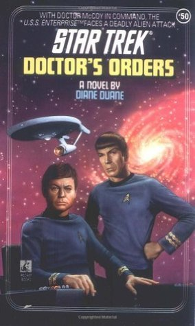
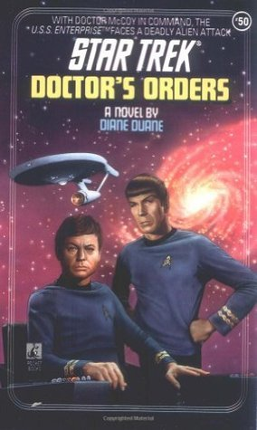

《星际迷航》系列小说应该从哪里看起？
【多图预警】
我是来推书的。推书范围限于ST的The Original Series（目前只看过这一系列的小说），不能很全面地回答题主的问题，但难得看到问ST小说的题目，不推不快，所以就这样不太全面地回答了，希望有所帮助。
推书之前，还是简单说一下前几个问题。依然只针对ST，不过TOS之外的其他系列也基本适用。
1，应该从哪个系列或者哪几本书看起？
一个不太严谨的说法：顾名思义，当然从原初系列（The Original Series）看起。
TOS不是全部的ST，但没有TOS就没有ST。
之所以不太严谨是因为：1）从时间线来讲，最前面的其实不是TOS而是ENT（Enterprise），虽然ENT为后拍，也许理解为前传更合适；2）其实ST的系列之间没有那么强的连续性，基本不需要先看一个系列才能看懂另一个系列；3）当一个基本只看只喜欢TOS的人跟你推荐TOS……你还是得靠自己判断的……
不过不管你从哪一个系列看起，内部的顺序还是建议“电视剧→电影（如果有的话）→小说”，毕竟在ST系列中电视剧和电影是官方承认的正史，同人小说嘛该算是是野史+演义。比如懂一点三国正史再去看三国演义，往往会发现更多有意思的梗，且能保持自身历史观的纯洁，道理同此。 （重启的电影11、12虽然有官方授权，但不是同一个宇宙里发生的事情，所以我一直也是拿来当同人看的……）
2，有没有完整的阅读顺序图？
目前只在网上看到一张图囊括了TNG，DS9，Voyager，Enterprise几个系列的所谓“Reading Order”（偏偏没有TOS……唉）：
The Trek Collective: Trek-lit reading order。不过主要依据应该也就是Timeline，也另有网友整理过文字版的小说Timeline：
maplenet.net。
读ST小说还有一种顺序，就是按编号，我真地看到过有Trekkie说自己是按编号一本本看下来的（所以中间难免遇到质量不太过关的书，把他逼出来给差评），不过我觉得这种做法强迫症的原因可能更多，没什么道理。ST系列的小说编号是按照出版顺序来的，跟时间线无关，而且后出版的书也并没有义务参照之前出版的书（除非是续集），只要参照正史就可以了。两部小说完全可以针对同一事件提出矛盾的解释。
所以，我觉得不论编号顺序还是时间线顺序，其实都没有什么意义。再说有几个人真能把好几百本都看完的？
3，书籍有没有包括影视作品本身的主线剧情，还是全部都是前传外传后传什么的？
都有。剧集改编、动画改编、电影改编、前传、后传、外传……甚至正史里的一个“bug”就可以衍生一部小说。（比如克林贡人在最初TOS剧集中长得与地球人无异，后来电影里随着化妆技术和成本的改善，就变成那副凸脑门的形象……于是，衍生了一部小说解释克林贡人变身的秘密，Trekkie们的脑洞果然强大）
这里只推荐第一部电影的小说，虽然我不敢保证故事是最好的，同名电影也向来被喷得比较惨……但作者是ST的创造者Gene Roddenberry！这本书可算不是正史胜似正史，尤其对电视剧到电影之间空白时期的解释绝对是研究ST的宝贵史料（扯远了……），有中文版。
不过总体来讲，（个人感觉）没有太大必要去看剧集电影的改编小说，如果非要看文字（比如为了学英语），我倒是觉得不如读剧本，国外网友也整理出了全部的剧本：
Star Trek Transcripts（这个网站上你能找到ST所有系列，还有Doctor Who）。
4，这些书里，名气最大成就最高的有哪些？
到推书的部分了。以下推的基本都是TOS系列里口碑好评分高的，因为我自己选书看的时候也是先找了不少“Best Star Trek Novels”之类的推荐文章，还有参考Goodreads上的评分书评，所以算是有一定的客观性。另一个标准，推的都是我看过且自己觉得比较有意思的，因此也有一定的主观性。
（封面图面引自Goodreads，每本书加了此站链接，这个网站类似于国外的豆瓣读书，方便看国外网友的书评。）
1.
Federation by Judith Reeves-Stevens
如果让我给trekkie推荐一本ST小说的话，那一定是Federation，推荐给non-trekkie之前会稍微犹豫一下，毕竟不了解ST的背景，看这本书会比较累。其实这本书不是纯TOS，而是一个crossover，阵容TOS+TNG，还有发明曲速引擎的Zefram Cochrane担任重要角色，书中把TOS和TNG的故事交叉进行。涉及Time Travel，到最后两边的Enterprise船员会有“互动”的，不过互动方式不是简单穿越，而是真正的“跨时代的合作”……不能剧透了。
总之，有技术，有想象，有故事，有情怀，Goodreads上评分近4，可见一斑。
2.
The Entropy Effect by Vonda N. McIntyre(The Original Series #2)

让我专门给推荐给non-trekkie推荐一本ST，倒很有可能是这一本。因为我可以很形象地描述它：Spock版的《蝴蝶效应》。对的，比较传统的Time Travel小说，无论书名还是主题都跟后来的电影《蝴蝶效应》蛮相像的。不过请注意，论起发行时间来The Entropy Effect可比The Butterfly Effect早了20多年呢。（这真地只是只是巧合吗？）科幻方面自然也更硬一些，毕竟这是ST。
3.
Uhura's Song by Janet Kagan(Star Trek: The Original Series #21)

又一本评价很高的书。名为Uhura's Song，其实主角不是Uhura，依然Kirk&Spock，还有一个原创角色，是个略有点玛丽苏的女医生，不过没苏到令人讨厌的地步。这本书是讲文化差异的，有人类学的感觉。看多了星战类、阴谋类、时间旅行类，这本书还是让人感觉很清新的。
4.
Doctor's Orders by Diane Duane(The Original Series #50)
 
终于轮到Doctor McCoy拯救世界了。好吧，有点夸张，只是“the doctor in command”而已。不过这也很难得，很……不正常了，好吗？主线是对新星球新文明的探索，对外星生物的设计相当新奇。
有星战情节，尤其是考虑到坐在舰长椅子上的是向来最“感情用事”的McCoy医生，这就很有意思了。
5.
Spock Must Die! (Star Trek Adventures, #1) by James Blish
Bantam Books novels可能是最早的ST小说系列，而这本书是系列第一本，也是我看的第一本ST小说。网上评分不算很高，但也有人大力推荐。话说这本书有多有意思呢？大概就是2×Spock的级别，没错，所谓“
Spock Must Die”的意思是为了星舰的团结稳定，在这种情况下必须要执行“2Spock - Spock = Spock啦”，问题在于哪个是减数，哪个是差？ 这个可够Kirk舰长费心的了。
最后关于Klingon问题的结局，让人忍不住会心一笑。当然这不是正史，不过写这本书的时候那些正史还没有影呢。
另外传说中的Spock名言“A difference which makes no difference is no difference”，其实是在这本书里出现的。
6.
Prime Directive (Star Trek: Worlds in Collision, #2) by Judith Reeves-Stevens
这本书不得不推一下，因为评价、地位、地位口碑都是TOS小说里首屈一指的。不过说实话，我倒没有很喜欢这本书，觉得前半部情节的设计有些牵强，舰长他们也被逼得太悲惨了一些……本书的价值在于对最高指导原则（Prime Directive）以及违反后果的思考。
这里还是要说明一下TOS时代的Prime Directive还没有TNG里设计得那么细致明确，以致Kirk舰长有过几次疑似违反PD的行为，但其实大量实例证明，舰长本质上还是Prime Directive的坚定遵守和忠实维护者 （绝对不是新时间线里稀里糊涂违反了PD还满不在乎隐瞒不报的那位）。
7. The Rings of Time by Greg Cox 链接：
goodreads.com
这本书比较新（2012年出版），被谈论得相对少些。不过我还是想把它挤进第一批里来推荐。类型跟第一本推荐的Federation有点像，涉及之前电视剧里的某位重要历史人物。Time Travel元素再次出现，不过这次居然是……“魂穿”。不过总体还是硬科幻风格，情节设计也很棒。
8.
Yesterday's Son (Star Trek: The Yesterday Saga, #1) by A.C. Crispin(The Original Series #11)

5年任务里比较靠后的故事。评分很不错。爆点仍然在Spock，而且居然是Spock发现自己在5000年前有了一个……私生子。这个故事可以弥补Spock在正史里没做过父亲的遗憾，Spock的儿子Zar也颇为惹人怜爱啊，不过Time Travel相关的故事往往逃脱不了宿命的纠缠……
9.
Time for Yesterday (Star Trek: The Yesterday Saga, #2) by A.C. Crispin(The Original Series #39)

上一本书的续集，已经是多年之后的故事了。Spock的父爱在上一本里还颇为含蓄，这一本中终于完全爆发。主线剧情扩展到整个宇宙的存亡问题，仍然是个跟时间相关的故事，the Guardian of Forever的秘密将最终揭开。
10.
The Vulcan Academy Murders by Jean Lorrah(The Original Series #20)

ST的小说有各种类型，这本是侦探类的。“无所不能”的Kirk舰长这次化身星际神探，调查一桩匪夷所思的连环杀人案。“犯罪”与“瓦肯”似乎是2个不兼容的词（所有不少小说才喜欢把它们联系在一起吧），且看舰长层层抽丝剥茧……
对Spock家庭感兴趣的一定要看一下这一本，Sarek的戏份尤其不错。